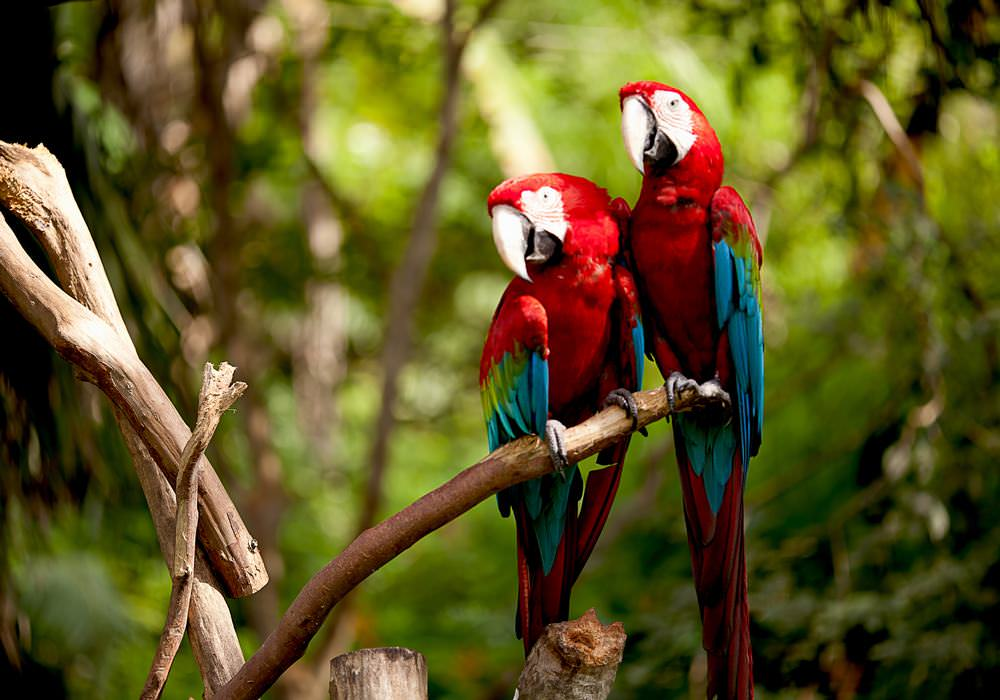

Quem somos nós
A KAJ é uma organização ambiental
onde nós defendemos a floresta Amazônica.
Desde 2014 fazendo a diferênça no mercado.

objetivos
A Amazônia é quase mitica, um verde e vasto mundo de águas e florestas
e nosso objetivo é prevenir cada vez mais o desmatamento e a extinção de animais

Princípios
Lutar para proteger o meio ambiente.
Sempre consientizando as pessoas a jogar lixo no lixo,
um simples passo pode mudar o mundo.